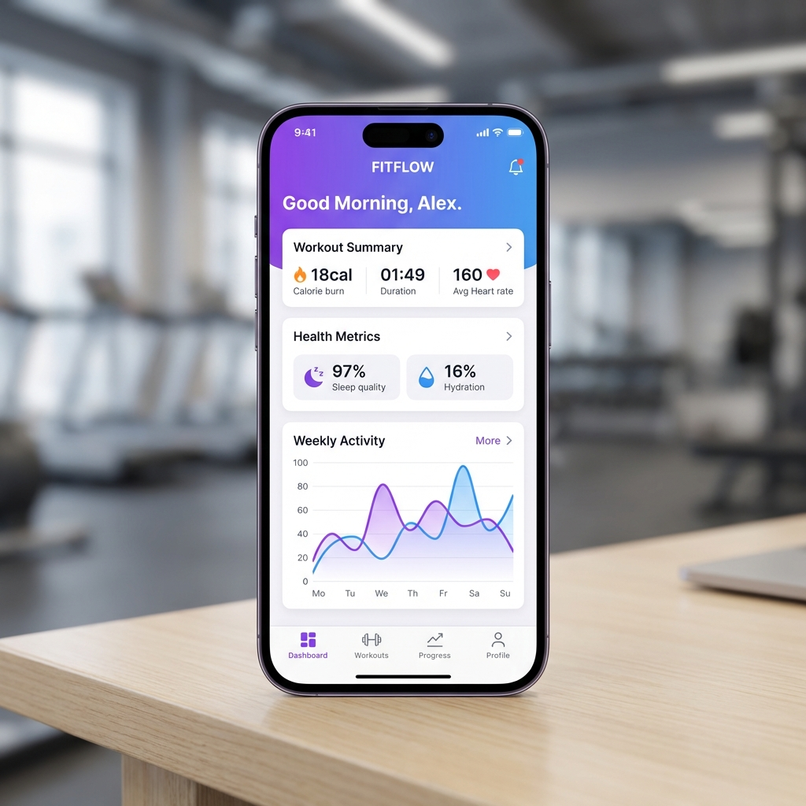

Mobile Fitness Tracker
A cross-platform mobile application for tracking workouts, monitoring nutrition intake, setting fitness goals, and sharing progress with friends — your personal fitness companion that adapts to your journey.

Project Overview
The vision behind this project
Your Personal Fitness Companion
The Mobile Fitness Tracker was designed to make health and fitness tracking effortless and enjoyable. Unlike complex fitness apps with overwhelming features, this app focuses on a clean, intuitive experience that helps users build consistent workout habits and make informed nutritional choices.
The app covers the full fitness lifecycle — from setting personalized goals based on body metrics and fitness level, to logging workouts with detailed exercise tracking (sets, reps, weight, duration), to monitoring daily nutrition with a built-in food database containing over 10,000 items with macronutrient breakdowns.
A social component adds motivation through friend connections, progress sharing, and friendly challenges. Users can follow each other's streaks, celebrate milestones, and participate in weekly fitness challenges to stay motivated on their journey.
Key Features
What makes this app exceptional
Workout Tracking
Log exercises with detailed metrics — sets, reps, weight, duration, and rest periods. Choose from a library of 200+ exercises with animated guides and proper form instructions.
Nutrition Logger
Track daily food intake with a searchable database of 10,000+ items. Automatic macro calculation (calories, protein, carbs, fat) with daily and weekly summaries.
Goal Setting
Set personalized fitness goals — weight loss, muscle gain, endurance improvement — with adaptive recommendations based on your progress and activity patterns.
Progress Analytics
Visual progress charts showing body metrics, workout volume, strength progression over time, and calorie balance with customizable date ranges.
Social Features
Connect with friends, share workout achievements, participate in community challenges, and celebrate each other's milestones with reactions and comments.
Streak System
Daily workout streaks with achievement badges, weekly consistency scores, and motivational reminders to keep you engaged and building healthy habits.
Tech Stack
Technologies powering this project
React Native
Cross-platform mobile framework with native performance, custom animations, and platform-specific UI adaptations
Node.js + Express
RESTful API backend handling user data, workout logs, nutrition tracking, and social features
MySQL
Relational database with optimized schemas for complex workout history queries and nutrition data relationships
React Navigation
Stack, tab, and drawer navigation with smooth transitions and deep linking support
Push Notifications
Firebase Cloud Messaging for workout reminders, streak alerts, and social activity notifications
Architecture & Approach
How this project was built
1. UI/UX Design
Started with user research and competitive analysis of popular fitness apps. Designed wireframes and high-fidelity mockups focusing on quick logging workflows — users should be able to log a workout in under 60 seconds.
2. Database Architecture
Designed a normalized MySQL schema with tables for users, workout_sessions, exercises, exercise_logs, foods, nutrition_entries, goals, and social_connections. Added proper indexing for fast query performance on historical data.
3. API Development
Built RESTful endpoints with Express.js, implementing JWT authentication, request validation with express-validator, and efficient pagination for workout history. Used Sequelize ORM for clean database interactions.
4. Mobile App Development
Built the React Native app with a modular component architecture, custom hooks for data fetching, AsyncStorage for offline caching, and React Native Reanimated for smooth 60fps animations throughout the UI.
5. Social & Gamification
Implemented the social layer with friend connections, activity feeds, and a gamification engine that awards badges for consistency, personal records, and challenge completions. Push notifications keep users engaged.
Challenges & Solutions
Problems I solved along the way
Offline-First Experience
Users often work out in gyms with poor connectivity. The app needed to function seamlessly offline and sync data reliably when connection is restored.
Implemented an offline-first architecture using AsyncStorage for local persistence, a sync queue for pending API calls, and conflict resolution logic for data merging upon reconnection.
Performance with Large Datasets
Active users generate thousands of workout entries over months. Loading and rendering large datasets for progress charts caused noticeable lag and memory issues.
Implemented server-side data aggregation for chart data, lazy loading with infinite scroll for workout history, and used FlatList's virtualization to render only visible items in long lists.